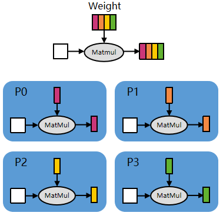
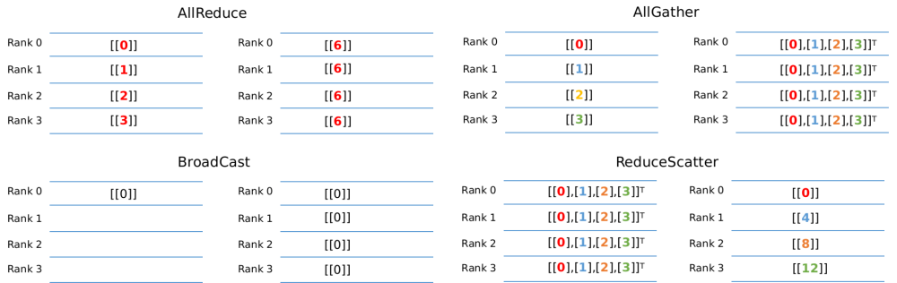
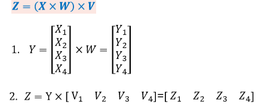
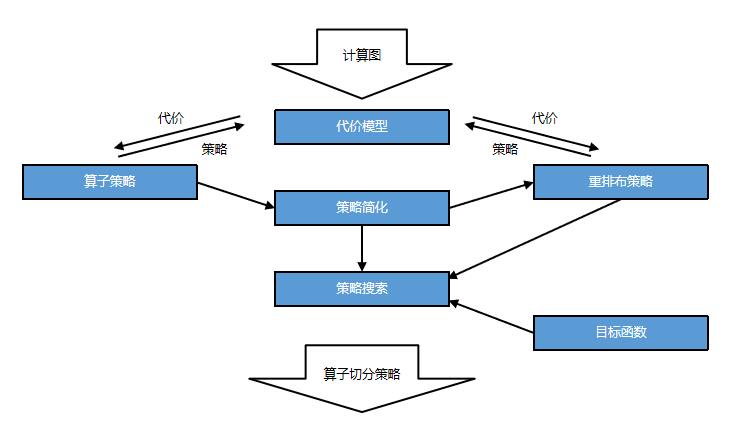

分布式并行训练 （Ascend）¶
Ascend 进阶 分布式并行

在深度学习中，当数据集和参数量的规模越来越大，训练所需的时间和硬件资源会随之增加，最后会变成制约训练的瓶颈。分布式并行训练，可以降低对内存、计算性能等硬件的需求，是进行训练的重要优化手段。根据并行的原理及模式不同，业界主流的并行类型有以下几种：
数据并行（Data Parallel）：对数据进行切分的并行模式，一般按照batch维度切分，将数据分配到各个计算单元（worker）中，进行模型计算。
模型并行（Model Parallel）：对模型进行切分的并行模式。MindSpore中支持层内模型并行模式，即对参数切分后分配到各个计算单元中进行训练。
混合并行（Hybrid Parallel）：指涵盖数据并行和模型并行的并行模式。

数据并行示意图

层间模型并行示意图
实现以上三种并行模式，依赖于各个计算单元之间进行通信，主要有以下四种集合通信算子:

以MatMul为例，简单说明一下对算子进行切分后，如何应用上述的并行逻辑。


对于公式所示的矩阵连乘，对于矩阵的切分如公式的子步骤所示，划分到4个计算单元上。各卡上的运算与通信逻辑如上图，通过Allreduce算子保证计算的正确性。


对于公式所示的矩阵连乘，对于矩阵的切分如公式的子步骤所示，划分到4个计算单元上。各卡上的运算与通信逻辑如上图，通过Allgather算子保证计算的正确性。
本篇教程我们主要讲解如何在Ascend 910 AI处理器硬件平台上，利用MindSpore通过下面两种并行模式训练ResNet-50网络。
DATA_PARALLEL：数据并行模式。
AUTO_PARALLEL：自动并行模式，融合了数据并行、模型并行及混合并行的1种分布式并行模式，可以自动建立代价模型，找到训练时间较短的并行策略，为用户选择1种并行模式。
依据代价模型的自动策略寻优流程示意图如下所示，以动态规划的方式，求解算子切分的时间、空间代价、算子间切分策略切换的重新排布时间、空间代价，寻优全局最优的算子切分策略策略。

目录结构如下：
└─sample_code
├─distributed_training
│ rank_table_16pcs.json
│ rank_table_8pcs.json
│ rank_table_2pcs.json
│ resnet.py
│ resnet50_distributed_training.py
│ run.sh
│ run_cluster.sh
...
其中，rank_table_16pcs.json、rank_table_8pcs.json、rank_table_2pcs.json是配置当前多卡环境的组网信息文件。resnet.py、resnet50_distributed_training.py等文件是定义网络结构的脚本。run.sh、run_cluster.sh是执行脚本。
准备环节¶
下载数据集¶
本样例采用CIFAR-10数据集，由10类32*32的彩色图片组成，每类包含6000张图片。其中训练集共50000张图片，测试集共10000张图片。
CIFAR-10数据集下载链接：http://www.cs.toronto.edu/~kriz/cifar-10-binary.tar.gz。
将数据集下载并解压到本地路径下，解压后的文件夹为cifar-10-batches-bin。
配置分布式环境变量¶
在裸机环境（对比云上环境，即本地有Ascend 910 AI 处理器）进行分布式训练时，需要配置当前多卡环境的组网信息文件。如果使用华为云环境，因为云服务本身已经做好了配置，可以跳过本小节。
以Ascend 910 AI处理器为例，1个8卡环境的json配置文件示例如下，本样例将该配置文件命名为rank_table_8pcs.json。2卡环境配置可以参考样例代码中的rank_table_2pcs.json文件。
{
"version": "1.0",
"server_count": "1",
"server_list": [
{
"server_id": "10.155.111.140",
"device": [
{"device_id": "0","device_ip": "192.1.27.6","rank_id": "0"},
{"device_id": "1","device_ip": "192.2.27.6","rank_id": "1"},
{"device_id": "2","device_ip": "192.3.27.6","rank_id": "2"},
{"device_id": "3","device_ip": "192.4.27.6","rank_id": "3"},
{"device_id": "4","device_ip": "192.1.27.7","rank_id": "4"},
{"device_id": "5","device_ip": "192.2.27.7","rank_id": "5"},
{"device_id": "6","device_ip": "192.3.27.7","rank_id": "6"},
{"device_id": "7","device_ip": "192.4.27.7","rank_id": "7"}],
"host_nic_ip": "reserve"
}
],
"status": "completed"
}
其中需要根据实际训练环境修改的参数项有：
server_count表示参与训练的机器数量。server_id表示当前机器的IP地址。device_id表示卡物理序号，即卡所在机器中的实际序号。device_ip表示集成网卡的IP地址，可以在当前机器执行指令cat /etc/hccn.conf，address_x的键值就是网卡IP地址。rank_id表示卡逻辑序号，固定从0开始编号。
调用集合通信库¶
MindSpore分布式并行训练的通信使用了华为集合通信库Huawei Collective Communication Library（以下简称HCCL），可以在Ascend AI处理器配套的软件包中找到。同时luojianet.communication.management中封装了HCCL提供的集合通信接口，方便用户配置分布式信息。
HCCL实现了基于Ascend AI处理器的多机多卡通信，有一些使用限制，我们列出使用分布式服务常见的，详细的可以查看HCCL对应的使用文档。
单机场景下支持1、2、4、8卡设备集群，多机场景下支持8*n卡设备集群。
每台机器的0-3卡和4-7卡各为1个组网，2卡和4卡训练时卡必须相连且不支持跨组网创建集群。
组建多机集群时需要保证各台机器使用同一交换机。
服务器硬件架构及操作系统需要是SMP（Symmetrical Multi-Processing，对称多处理器）处理模式。
下面是调用集合通信库样例代码：
import os
from luojianet import context
from luojianet.communication import init
if __name__ == "__main__":
context.set_context(mode=context.GRAPH_MODE, device_target="Ascend", device_id=int(os.environ["DEVICE_ID"]))
init()
...
其中，
mode=context.GRAPH_MODE：使用分布式训练需要指定运行模式为图模式（PyNative模式当前仅支持数据并行）。device_id：卡的物理序号，即卡所在机器中的实际序号。init：使能HCCL通信，并完成分布式训练初始化操作。
数据并行模式加载数据集¶
分布式训练时，数据是以数据并行的方式导入的。下面我们以CIFAR-10数据集为例，介绍以数据并行方式导入CIFAR-10数据集的方法，data_path是指数据集的路径，即cifar-10-batches-bin文件夹的路径。
from luojianet import dtype as mstype
import luojianet.dataset as ds
import luojianet.dataset.transforms.c_transforms as C
import luojianet.dataset.vision.c_transforms as vision
from luojianet.communication import get_rank, get_group_size
def create_dataset(data_path, repeat_num=1, batch_size=32):
resize_height = 224
resize_width = 224
rescale = 1.0 / 255.0
shift = 0.0
# 获取rank_id与rank_size
rank_id = get_rank()
rank_size = get_group_size()
data_set = ds.Cifar10Dataset(data_path, num_shards=rank_size, shard_id=rank_id)
# 定义数据的map操作
random_crop_op = vision.RandomCrop((32, 32), (4, 4, 4, 4))
random_horizontal_op = vision.RandomHorizontalFlip()
resize_op = vision.Resize((resize_height, resize_width))
rescale_op = vision.Rescale(rescale, shift)
normalize_op = vision.Normalize((0.4465, 0.4822, 0.4914), (0.2010, 0.1994, 0.2023))
changeswap_op = vision.HWC2CHW()
type_cast_op = C.TypeCast(mstype.int32)
c_trans = [random_crop_op, random_horizontal_op]
c_trans += [resize_op, rescale_op, normalize_op, changeswap_op]
# 对图片数据进行map操作
data_set = data_set.map(operations=type_cast_op, input_columns="label")
data_set = data_set.map(operations=c_trans, input_columns="image")
# 对数据集进行处理
data_set = data_set.shuffle(buffer_size=10)
data_set = data_set.batch(batch_size=batch_size, drop_remainder=True)
data_set = data_set.repeat(repeat_num)
return data_set
其中，与单机不同的是，在数据集接口需要传入num_shards和shard_id参数，分别对应卡的数量和逻辑序号，
num_shards告知数据集处理逻辑需要将完整的数据batch拆分为多少个数据子batch，shard_id告知数据集处理逻辑当前进程持有第几个数据子batch，建议通过HCCL接口获取：
get_rank：获取当前设备在集群中的ID，用于设置shard_id。get_group_size：获取集群数量，用于设置num_shards。
数据并行场景加载数据集时，建议对每卡指定相同的数据集文件，若是各卡加载的数据集不同，可能会影响计算精度。
定义网络¶
数据并行及自动并行模式下，网络定义方式与单机写法一致，可以参考ResNet网络样例脚本。
定义损失函数及优化器¶
定义损失函数¶
自动并行以算子为粒度切分模型，通过算法搜索得到最优并行策略，所以与单机训练不同的是，为了有更好的并行训练效果，损失函数建议使用小算子来实现。
在Loss部分，我们采用SoftmaxCrossEntropyWithLogits的展开形式，即按照数学公式，将其展开为多个小算子进行实现，样例代码如下：
import luojianet.ops as ops
from luojianet import Tensor
from luojianet import dtype as mstype
import luojianet.nn as nn
class SoftmaxCrossEntropyExpand(nn.Cell):
def __init__(self, sparse=False):
super(SoftmaxCrossEntropyExpand, self).__init__()
self.exp = ops.Exp()
self.sum = ops.ReduceSum(keep_dims=True)
self.onehot = ops.OneHot()
self.on_value = Tensor(1.0, mstype.float32)
self.off_value = Tensor(0.0, mstype.float32)
self.div = ops.RealDiv()
self.log = ops.Log()
self.sum_cross_entropy = ops.ReduceSum(keep_dims=False)
self.mul = ops.Mul()
self.mul2 = ops.Mul()
self.mean = ops.ReduceMean(keep_dims=False)
self.sparse = sparse
self.max = ops.ReduceMax(keep_dims=True)
self.sub = ops.Sub()
self.eps = Tensor(1e-24, mstype.float32)
def construct(self, logit, label):
logit_max = self.max(logit, -1)
exp = self.exp(self.sub(logit, logit_max))
exp_sum = self.sum(exp, -1)
softmax_result = self.div(exp, exp_sum)
if self.sparse:
label = self.onehot(label, ops.shape(logit)[1], self.on_value, self.off_value)
softmax_result_log = self.log(softmax_result + self.eps)
loss = self.sum_cross_entropy((self.mul(softmax_result_log, label)), -1)
loss = self.mul2(ops.scalar_to_array(-1.0), loss)
loss = self.mean(loss, -1)
return loss
定义优化器¶
采用Momentum优化器作为参数更新工具，这里定义与单机一致，不再展开，具体可以参考样例代码中的实现。
训练网络¶
context.set_auto_parallel_context是配置并行训练参数的接口，必须在初始化网络之前调用。常用参数包括：
parallel_mode：分布式并行模式，默认为单机模式ParallelMode.STAND_ALONE。可选数据并行ParallelMode.DATA_PARALLEL及自动并行ParallelMode.AUTO_PARALLEL。parameter_broadcast：训练开始前自动广播0号卡上数据并行的参数权值到其他卡上，默认值为False。gradients_mean：反向计算时，框架内部会将数据并行参数分散在多台机器的梯度值进行收集，得到全局梯度值后再传入优化器中更新。默认值为False，设置为True对应allreduce_mean操作，False对应allreduce_sum操作。device_num和global_rank建议采用默认值，框架内会调用HCCL接口获取。
如脚本中存在多个网络用例，请在执行下个用例前调用context.reset_auto_parallel_context将所有参数还原到默认值。
在下面的样例中我们指定并行模式为自动并行，用户如需切换为数据并行模式只需将parallel_mode改为DATA_PARALLEL。
from luojianet import context, Model
from luojianet.nn import Momentum
from luojianet.train.callback import LossMonitor
from luojianet.context import ParallelMode
from resnet import resnet50
device_id = int(os.getenv('DEVICE_ID'))
context.set_context(mode=context.GRAPH_MODE, device_target="Ascend")
context.set_context(device_id=device_id) # set device_id
def test_train_cifar(epoch_size=10):
context.set_auto_parallel_context(parallel_mode=ParallelMode.AUTO_PARALLEL, gradients_mean=True)
loss_cb = LossMonitor()
data_path = os.getenv('DATA_PATH')
dataset = create_dataset(data_path)
batch_size = 32
num_classes = 10
net = resnet50(batch_size, num_classes)
loss = SoftmaxCrossEntropyExpand(sparse=True)
opt = Momentum(filter(lambda x: x.requires_grad, net.get_parameters()), 0.01, 0.9)
model = Model(net, loss_fn=loss, optimizer=opt)
model.train(epoch_size, dataset, callbacks=[loss_cb], dataset_sink_mode=True)
其中，
dataset_sink_mode=True：表示采用数据集的下沉模式，即训练的计算下沉到硬件平台中执行。LossMonitor：能够通过回调函数返回Loss值，用于监控损失函数。
运行脚本¶
上述已将训练所需的脚本编辑好了，接下来通过命令调用对应的脚本。
目前MindSpore分布式执行采用单卡单进程运行方式，即每张卡上运行1个进程，进程数量与使用的卡的数量一致。其中，0卡在前台执行，其他卡放在后台执行。每个进程创建1个目录，用来保存日志信息以及算子编译信息。下面以使用8张卡的分布式训练脚本为例，演示如何运行脚本：
#!/bin/bash
echo "=============================================================================================================="
echo "Please run the script as: "
echo "bash run.sh DATA_PATH RANK_SIZE"
echo "For example: bash run.sh /path/dataset 8"
echo "It is better to use the absolute path."
echo "=============================================================================================================="
DATA_PATH=$1
export DATA_PATH=${DATA_PATH}
RANK_SIZE=$2
EXEC_PATH=$(pwd)
test_dist_8pcs()
{
export RANK_TABLE_FILE=${EXEC_PATH}/rank_table_8pcs.json
export RANK_SIZE=8
}
test_dist_2pcs()
{
export RANK_TABLE_FILE=${EXEC_PATH}/rank_table_2pcs.json
export RANK_SIZE=2
}
test_dist_${RANK_SIZE}pcs
for((i=1;i<${RANK_SIZE};i++))
do
rm -rf device$i
mkdir device$i
cp ./resnet50_distributed_training.py ./resnet.py ./device$i
cd ./device$i
export DEVICE_ID=$i
export RANK_ID=$i
echo "start training for device $i"
env > env$i.log
pytest -s -v ./resnet50_distributed_training.py > train.log$i 2>&1 &
cd ../
done
rm -rf device0
mkdir device0
cp ./resnet50_distributed_training.py ./resnet.py ./device0
cd ./device0
export DEVICE_ID=0
export RANK_ID=0
echo "start training for device 0"
env > env0.log
pytest -s -v ./resnet50_distributed_training.py > train.log0 2>&1
if [ $? -eq 0 ];then
echo "training success"
else
echo "training failed"
exit 2
fi
cd ../
脚本需要传入变量DATA_PATH和RANK_SIZE，分别表示数据集的绝对路径和卡的数量。
分布式相关的环境变量有，
RANK_TABLE_FILE：组网信息文件的路径。DEVICE_ID：当前卡在机器上的实际序号。RANK_ID：当前卡的逻辑序号。
其余环境变量请参考安装教程中的配置项。
运行时间大约在5分钟内，主要时间是用于算子的编译，实际训练时间在20秒内。用户可以通过ps -ef | grep pytest来监控任务进程。
日志文件保存到rank所对应的device0、 device1……目录下，env.log中记录了环境变量的相关信息，关于Loss部分结果保存在train.log中，示例如下：
epoch: 1 step: 156, loss is 2.0084016
epoch: 2 step: 156, loss is 1.6407638
epoch: 3 step: 156, loss is 1.6164391
epoch: 4 step: 156, loss is 1.6838071
epoch: 5 step: 156, loss is 1.6320667
epoch: 6 step: 156, loss is 1.3098773
epoch: 7 step: 156, loss is 1.3515002
epoch: 8 step: 156, loss is 1.2943741
epoch: 9 step: 156, loss is 1.2316195
epoch: 10 step: 156, loss is 1.1533381
多机多卡训练¶
前面的章节，对MindSpore的分布式训练进行了介绍，都是基于单机8卡的Ascend环境，使用多机进行分布式训练，可以更大地提升训练速度。 在Ascend环境下，跨机器的NPU单元的通信与单机内各个NPU单元的通信一样，依旧是通过HCCL进行通信，区别在于，单机内的NPU单元天然的是互通的，而跨机器的则需要保证两台机器的网络是互通的。 在确认了机器之间的NPU单元的网络是通畅后，配置多机的json配置文件，本教程以16卡的配置文件为例。需要注意的是，在多机的json文件配置中，要求rank_id的排序，与server_id的字典序一致。
{
"version": "1.0",
"server_count": "2",
"server_list": [
{
"server_id": "10.155.111.140",
"device": [
{"device_id": "0","device_ip": "192.1.27.6","rank_id": "0"},
{"device_id": "1","device_ip": "192.2.27.6","rank_id": "1"},
{"device_id": "2","device_ip": "192.3.27.6","rank_id": "2"},
{"device_id": "3","device_ip": "192.4.27.6","rank_id": "3"},
{"device_id": "4","device_ip": "192.1.27.7","rank_id": "4"},
{"device_id": "5","device_ip": "192.2.27.7","rank_id": "5"},
{"device_id": "6","device_ip": "192.3.27.7","rank_id": "6"},
{"device_id": "7","device_ip": "192.4.27.7","rank_id": "7"}],
"host_nic_ip": "reserve"
},
{
"server_id": "10.155.111.141",
"device": [
{"device_id": "0","device_ip": "192.1.27.8","rank_id": "8"},
{"device_id": "1","device_ip": "192.2.27.8","rank_id": "9"},
{"device_id": "2","device_ip": "192.3.27.8","rank_id": "10"},
{"device_id": "3","device_ip": "192.4.27.8","rank_id": "11"},
{"device_id": "4","device_ip": "192.1.27.9","rank_id": "12"},
{"device_id": "5","device_ip": "192.2.27.9","rank_id": "13"},
{"device_id": "6","device_ip": "192.3.27.9","rank_id": "14"},
{"device_id": "7","device_ip": "192.4.27.9","rank_id": "15"}],
"host_nic_ip": "reserve"
}
],
"status": "completed"
}
准备好配置文件后，可以进行分布式多机训练脚本的组织，在以2机16卡为例，两台机器上编写的脚本与单机8卡的运行脚本类似，区别在于指定不同的rank_id变量。
#!/bin/bash
echo "=============================================================================================================="
echo "Please run the script as: "
echo "bash run.sh DATA_PATH RANK_TABLE_FILE RANK_SIZE RANK_START"
echo "For example: bash run.sh /path/dataset /path/rank_table.json 16 0"
echo "It is better to use the absolute path."
echo "=============================================================================================================="
execute_path=$(pwd)
echo ${execute_path}
script_self=$(readlink -f "$0")
self_path=$(dirname "${script_self}")
echo ${self_path}
export DATA_PATH=$1
export RANK_TABLE_FILE=$2
export RANK_SIZE=$3
RANK_START=$4
DEVICE_START=0
for((i=0;i<=7;i++));
do
export RANK_ID=$[i+RANK_START]
export DEVICE_ID=$[i+DEVICE_START]
rm -rf ${execute_path}/device_$RANK_ID
mkdir ${execute_path}/device_$RANK_ID
cd ${execute_path}/device_$RANK_ID || exit
pytest -s ${self_path}/resnet50_distributed_training.py >train$RANK_ID.log 2>&1 &
done
上面列出的参考脚本，所要求的代码组织结构如下，脚本中会获取脚本所在路径以及命令执行的路径，并且将所有任务都置于后台执行。
└─sample_code
├─distributed_training
│ resnet50_distributed_training.py
│ run_cluster.sh
执行时，两台机器分别执行如下命令，其中rank_table.json按照本章节展示的16卡的分布式json文件参考配置。
# server0
bash run.sh /path/dataset /path/rank_table.json 16 0
# server1
bash run.sh /path/dataset /path/rank_table.json 16 8